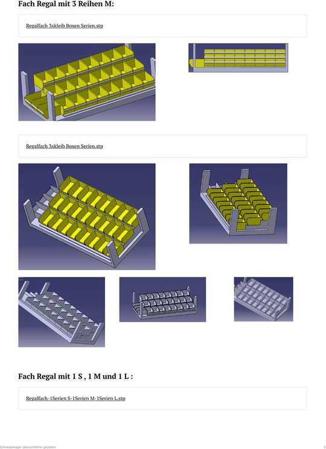
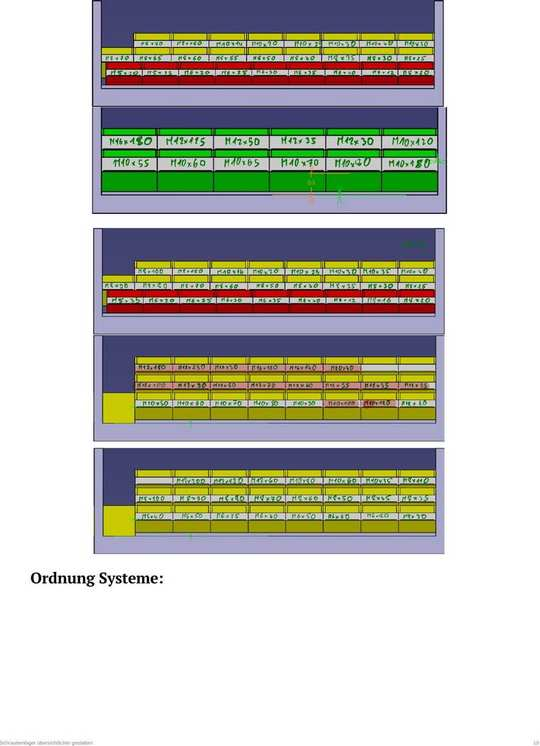

i · Kopfdaten des Dokuments
1:1 übernommen.
| Titel | Schraubenlager übersichtlicher gestalten |
| Aufgabe N° | 1 |
| Besitzer/-in | Hussin |
| Datum Beginn | 2. März 2026 |
| Datum Ende | 9. März 2026 |
| Typ | weitere Tätigkeiten |
| Anhänge | Schraubenlager übersichtlicher gestalten.pdf · .docx · mehrere .stp-CAD-Dateien |
Bearbeitungszeit laut Kopfdaten: 2.–9. März 2026, also rund eine Arbeitswoche für den Konstruktionsteil.
1 · Die drei Boxgrößen
Originalmaße.
Box S · 102 × 74 × 115 mm
kleine Schrauben bis 20 mm.
Box M · 115 × 85 × 155 mm
mittlere Längen 25 – 80 mm.
Box L · 145 × 125 × 225 mm
lange Schrauben ab 85 mm.
Rechnerische Prüfung gegen die Fachbreite 930 mm:
- Box S · 102 mm→ 930 ÷ 102 = 9 Boxen je Reihe (Rest 12 mm).
- Box M · 115 mm→ 930 ÷ 115 = 8 Boxen je Reihe (Rest 10 mm).
- Box L · 145 mm→ 930 ÷ 145 = 6 Boxen je Reihe (Rest 60 mm).
⇒ Die drei Größen sind so gewählt, dass sie die Fachbreite nahezu restlos ausnutzen – genau die Aufgabenstellung aus Seite 2.
2 · Fünf Fach-Varianten und ihre Kapazität
„Kapazitäten pro Fach-Type“.

Fach-Regal mit 3 Reihen M – eine von fünf konstruierten Fach-Varianten.
| Fach-Variante | Boxen-Mix | Reihen | Boxen je Fach |
|---|---|---|---|
| Fach mit 3 Reihen M | 3 × M | 9 + 9 + 9 | 27 |
| Fach mit 1 S, 1 M und 1 L | S + M + L | 9 + 9 + 6 | 24 |
| Fach mit 1 S und 2 M | S + M + M | 9 + 9 + 8 | 26 |
| Fach mit 2 Reihen L | L + L | 6 + 6 | 12 |
| Fach mit 1 M und 1 L | M + L | 9 + 6 + 0 | 15 |
Was die fünf Varianten leisten:
- 3 × M (27)meiste Plätze, aber nur eine Boxgröße: unflexibel für lange Schrauben.
- S + M + L (24)die ergonomischste Lösung: jede Länge bekommt die passende Box.
- S + 2 M (26)guter Kompromiss, fast so viele Plätze wie 3 × M.
- 2 × L (12)nur für die langen Schrauben sinnvoll, halbe Kapazität.
- M + L (15)die dritte Reihe entfällt (im Original durchgestrichen), dadurch nur 15.
3 · Das komplette Regal – 3 Bestückungsvarianten
6 Fächer.
| Regalvariante | Plätze | Bemerkung |
|---|---|---|
| Regal volle Boxen M | 162 | 6 × 27 Boxplätze · Bedarf 135 → passt ✓ |
| Regal volle S · M · L | 144 | 6 × 24 Boxplätze · Bedarf 135 → passt ✓ |
| Regal volle 1S 2M | 156 | 6 × 26 Boxplätze · Bedarf 135 → passt ✓ |
Die entscheidende Aussage:
- Alle drei Varianten reichenfür die 135 benötigten Boxen – 144, 156 und 162 Plätze.
- Beste ReserveVariante „volle M“ mit 162 Plätzen = 27 freie Plätze (20 % Reserve).
- Beste ErgonomieVariante „S · M · L“ mit 144 Plätzen = 9 freie Plätze (7 % Reserve).
- Bester Kompromiss„1S 2M“ mit 156 Plätzen = 21 freie Plätze (16 % Reserve).
4 · Belegungsplan – „Regal gefüllt“
Jede Box mit konkreter Schraube beschriftet.

Vier Fächer aus dem handschriftlichen Belegungsplan.
Meine Lesart der Handschrift – als Beispiel zwei Fächer transkribiert. Bitte gegenlesen, bevor daraus Etiketten gedruckt werden.
| Fach 1 · gelb + rot | |
|---|---|
| Reihe 1 · gelb (M) | M8×80 · M8×180 · M10×14 · M10×20 · M10×25 · M10×30 · M10×40 · M10×50 |
| Reihe 2 · gelb (M) | M8×70 · M8×65 · M8×60 · M8×55 · M8×50 · M8×20 · M8×35 · M8×30 · M8×25 |
| Reihe 3 · rot (S) | M5×20 · M5×25 · M6×20 · M6×25 · M6×30 · M6×35 · M6×40 · M8×12 · M8×20 |
| Fach 2 · grün | |
|---|---|
| Reihe 1 · grün (L) | M16×180 · M12×125 · M12×50 · M12×35 · M12×30 · M10×120 |
| Reihe 2 · grün (L) | M10×55 · M10×60 · M10×65 · M10×70 · M10×80 · M10×180 |
Die übrigen vier Fächer können auf Wunsch genauso transkribiert werden – dann liegt die komplette Etikettenliste als Tabelle vor.
Einordnung in das Gesamtprojekt
| Frage aus der Aufgabenstellung | Antwort aus dieser Konstruktion | Status |
|---|---|---|
| Welche Boxgröße? | Drei Größen: S 102 · M 115 · L 145 mm Breite | geklärt |
| Wie viele passen nebeneinander? | 9 × S, 8 × M oder 6 × L je Reihe | geklärt |
| Reicht das Regal für 135 Boxen? | Ja – 144 bis 162 Plätze je nach Variante | geklärt |
| Wie sieht das Trennsystem aus? | Trennstege sind im CAD-Modell bereits enthalten | geklärt |
| Welche Schraube in welche Box? | Belegungsplan liegt handschriftlich vor | zu digitalisieren |
| Etiketten | noch offen | offen |